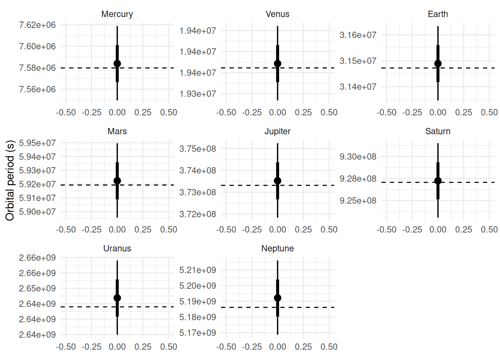

My experience with astronomy and astrophysics boils down to teenage curiosity. The main purpose of this example is as an exercise in brms nonlinear syntax. There are probably many tiny errors and things that could be done better.
What?
In some disciplines, there is a disconnect between scientific theory and use of models and current practice. In physics, for example, theory often results in an explicit functional form, this model is tested against reality, and it is provisionally kept as long as there are no obvious discrepancies with observation. If and when those arise, it’s an incentive to question the model and look for a better one. In many other scientific fields, the role of falsification seems like the opposite: nobody really believes the “null” model represents reality, and observing a lack of fit to data is the goal. Null hypothesis rejected, you discovered something new (maybe) and you win! This contrast has been highlighted several times, for example by (Meehl 1967).
It doesn’t have to be like this. Even when fitting statistical models to empirical data, sometimes you’re lucky and theory provides you with a formula that you can use in place of an additive linear model. Chapter 16 of (McElreath 2020) is dedicated to examples of this, including one with the Lotka-Volterra equations. Nonlinear model formulas are key to this approach, so, with the purpose of getting in some exercise with them in brms, I have developed the following contrived example:
Let’s fit Kepler’s third law in brms to find the gravitational constant G
What I mean exactly is the formula that you get by substituting Newton’s law of gravitation into Kepler’s law
\[\frac{a^{3}}{T^{2}}=\frac{G(M+m)}{4\pi^{2}}\]
What data to fit this to? I found a website that lets you freely download data about solar system bodies in a machine-readable way. For simplicity, I’m restricting this to moons orbiting around planets, since the two are easy to combine in their data format.
Caricamento del pacchetto richiesto: Rcpp
Loading 'brms' package (version 2.23.0). Useful instructions
can be found by typing help('brms'). A more detailed introduction
to the package is available through vignette('brms_overview').
[conflicted] Will prefer dplyr::filter over any other package.
[conflicted] Will prefer brms::ar over any other package.
[conflicted] Will prefer brms::dstudent_t over any other package.
[conflicted] Will prefer brms::pstudent_t over any other package.
[conflicted] Will prefer brms::qstudent_t over any other package.
[conflicted] Will prefer brms::rstudent_t over any other package.
[conflicted] Will prefer stats::lag over any other package.
theme_set(theme_minimal())
Get the data
#this is my key, stored locally. You can get your own, it's freekey <-read_lines("apikey.txt")#moon datamoons <-GET("https://api.le-systeme-solaire.net/rest/bodies/", add_headers(Authorization =paste("Bearer", key)),query =list(`filter[]`="bodyType,eq,Moon")) |>content()#planet dataplanets <-GET("https://api.le-systeme-solaire.net/rest/bodies/", add_headers(Authorization =paste("Bearer", key)),query =list(`filter[]`="bodyType,eq,Planet")) |>content()useful <-c("id", "englishName", "semimajorAxis", "mass", "sideralOrbit", "aroundPlanet")#wrangle this ugly list into a nice tibbleplanets <- planets$bodies |>map(\(x) x |>#some elements are null, some are lists of length 2#as_tibble_row complains, that's why the gymnasticsdiscard(is_null) |>enframe() |>pivot_wider()) |>#bind the planet rows into a tibblebind_rows() |>#keep only what's necessaryselect(any_of(useful)) |>#mass is in scientific notation across two fieldsmutate(mass =map_dbl(mass, \(x) x$massValue *10^x$massExponent)) |>#undo the list-cols created by enframe() |> pivot_wider()mutate(across(everything(), unlist))#same as above, but for moonsmoons <- moons$bodies |>map(\(x) x |>discard(is_null) |>enframe() |>pivot_wider()) |>bind_rows() |>select(id, englishName, semimajorAxis, mass, sideralOrbit, aroundPlanet) |>#some moons have missing massdrop_na() |>mutate(mass =map_dbl(mass, \(x) x$massValue *10^x$massExponent),#just need the id of the planetaroundPlanet =map(aroundPlanet, 1)) |>mutate(across(everything(), unlist)) |>#there are some bogus entriesfilter(sideralOrbit >0)#join planets to moonsdata <- moons |>inner_join(planets |>select(id, mass),by =join_by(aroundPlanet == id),suffix =c("_s", "_p")) |>mutate(#only the sum of masses is identified in the equationM = mass_s + mass_p,#convert semi-major axis to metersa = semimajorAxis *1000,#convert sideral orbit to seconds#to be fancy, use a more accurate sideral dayT = sideralOrbit *23.9344696*3600,#remind the value of pi to the modelpi = pi)data
Since the data is literally on astronomical scales, I thought it wise to fit the model on a log10-transformed version of the equation. While this might take some of the nonlinear charm away, since a big product is transformed in a more familiar sum, we will see that the nonlinear formula will still let us specify the model in a way that would just break with a traditional model formula.
The parameter to fit is G, but we still need some meaningful outcome on the LHS. I decided to solve for \(\widehat{M} = M +m\)
\[\widehat{M}=\frac{4\pi^{2}a^{3}}{T^2G}\]
Then, taking the log10 of both sides
\[\log M = -\log G+\log4\pi^2+3\log a-2\log T\]
This translates directly into the nonlinear formula. Unlike the usual model formulas, regression coefficients (what you multiply the sum terms with) are explicit, so any parameter must be specified with a unique name in the formula. This lets us say explicitly that the last two terms must be multiplied by 3 and 2, not with parameters estimated from the data. The parameter to estimate, logG, has its own intercept-only model.
formula <-bf(log10(M) ~-logG +log10(4*pi^2) +3*log10(a) -2*log10(T), logG ~1,nl = T)
Since I’m not an astronomer, I’ll pretend I have no domain knowledge outside “planets are big, and moons as well” and use default priors just this once. The model fits fine in case you’re worried.
get_prior(formula, data)
prior class coef group resp dpar nlpar lb ub tag
student_t(3, 0, 2.5) sigma 0
(flat) b logG
(flat) b Intercept logG
source
default
default
(vectorized)
Time to actually fit the model.
fit <-brm(formula, data, file ="g_fit",seed =950)fit
Family: gaussian
Links: mu = identity
Formula: log10(M) ~ -logG + log10(4 * pi^2) + 3 * log10(a) - 2 * log10(T)
logG ~ 1
Data: data (Number of observations: 161)
Draws: 4 chains, each with iter = 2000; warmup = 1000; thin = 1;
total post-warmup draws = 4000
Regression Coefficients:
Estimate Est.Error l-95% CI u-95% CI Rhat Bulk_ESS Tail_ESS
logG_Intercept -10.17 0.00 -10.18 -10.17 1.00 4298 2409
Further Distributional Parameters:
Estimate Est.Error l-95% CI u-95% CI Rhat Bulk_ESS Tail_ESS
sigma 0.03 0.00 0.02 0.03 1.00 1434 1724
Draws were sampled using sampling(NUTS). For each parameter, Bulk_ESS
and Tail_ESS are effective sample size measures, and Rhat is the potential
scale reduction factor on split chains (at convergence, Rhat = 1).
How well did that go? Not so bad, considering all potential sources of error: almost as good as what had been derived from experiments 200 years ago, albeit with larger uncertainty.
g_draws <- fit |>as_draws_df(variable ="b_logG_Intercept") |>mutate(G =10^b_logG_Intercept)g_draws |>mean_qi(G) |>as.data.frame() |>mutate(rel_uncertainty = (.upper - .lower) / G *100) |>print(digits =10)
Warning: Dropping 'draws_df' class as required metadata was removed.
Warning: Dropping 'draws_df' class as required metadata was removed.
Warning: Dropping 'draws_df' class as required metadata was removed.
G .lower .upper .width .point .interval
1 6.703552392e-11 6.642138375e-11 6.764462352e-11 0.95 mean qi
rel_uncertainty
1 1.824763506
The beauty of Bayesian models is in the posterior distributions, we can look at those:
While this is a fine demonstration of nonlinear brms models, at the beginning I mentioned facing the model with reality. To do this we can take the estimated value of G (with all its posterior distribution) and generate predictions on a separate dataset. In this case, I’ll predict the orbital period of planets around the sun using G, masses, and semi-major axes.
\[T = \sqrt{\frac{4\pi^{2}a^{3}}{G\widehat{M}}}\]
planets <- planets |>arrange(sideralOrbit) |>mutate(englishName =fct(englishName),#the mass of the sun in kgmass_sun =1.988475e30,M = mass + mass_sun,#convert semi-major axis to metersa = semimajorAxis *1000,#convert sideral orbit to secondsT = sideralOrbit *23.9344696*3600,#remind the value of pi to the modelpi = pi)planets_pred <- planets |>expand_grid(G = g_draws$G) |>mutate(Tpred =sqrt((4*pi^2*a^3)/(G*M)))planets_pred |>ggplot() +stat_pointinterval(aes(y = Tpred)) +geom_hline(aes(yintercept = T),linetype =2,data = planets) +facet_wrap(vars(englishName),scales ="free") +scale_y_continuous(labels = scales::label_scientific()) +labs(x =NULL,y ="Orbital period (s)")

Not too bad!
References
McElreath, Richard. 2020. Statistical Rethinking: A Bayesian Course with Examples in r and STAN. 2nd ed. Chapman; Hall/CRC. https://doi.org/10.1201/9780429029608.
Meehl, Paul E. 1967. “Theory-Testing in Psychology and Physics: A Methodological Paradox.”Philosophy of Science 34 (2): 103–15. https://doi.org/10.1086/288135.